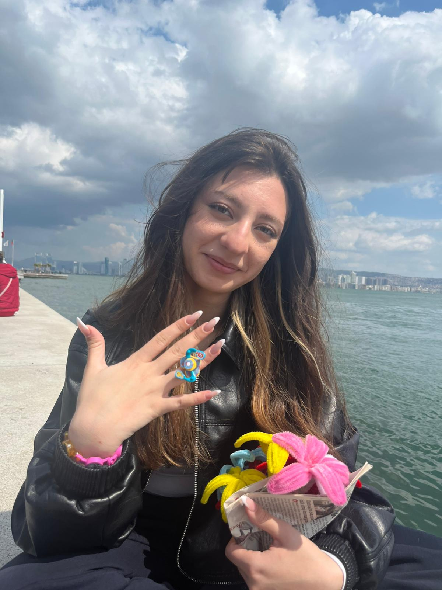
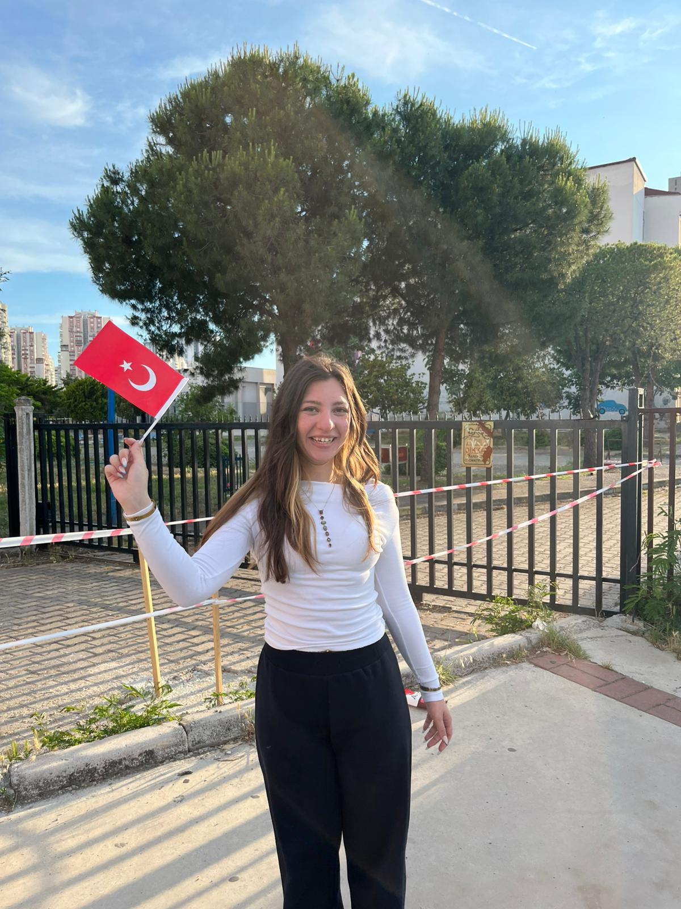
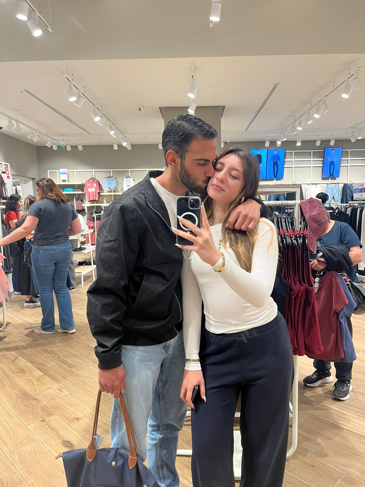
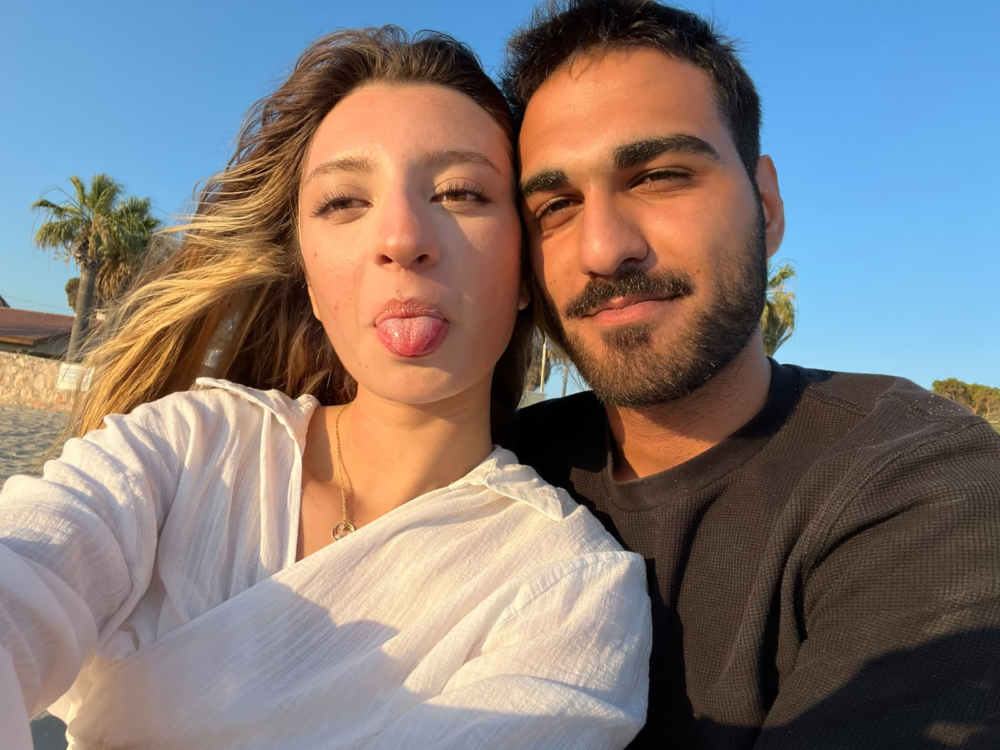
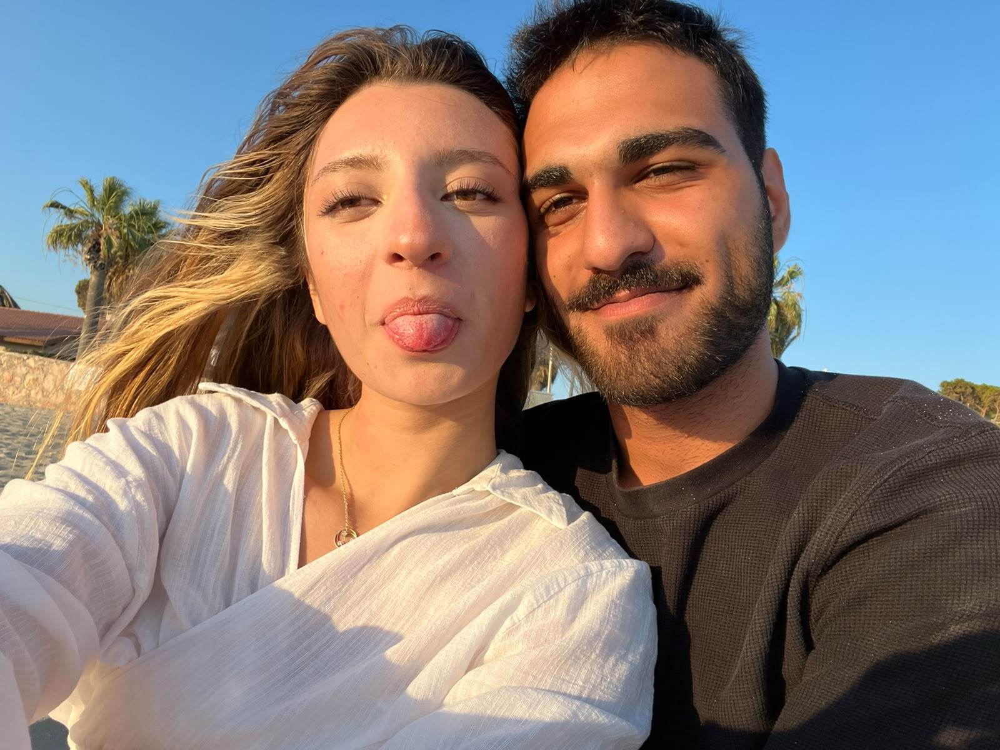
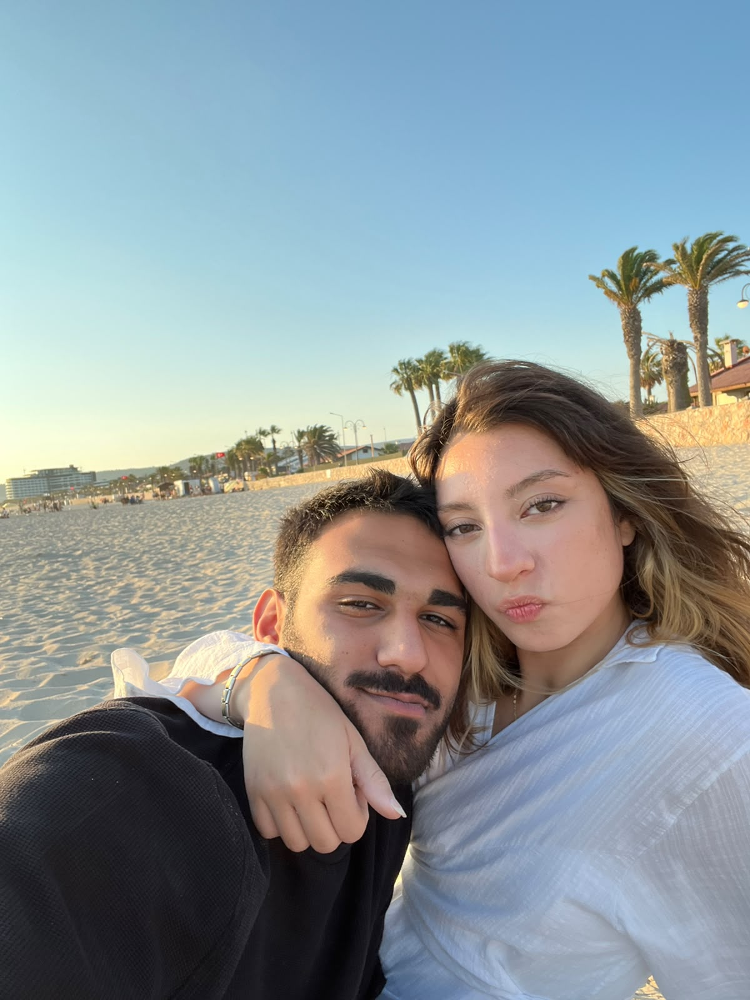
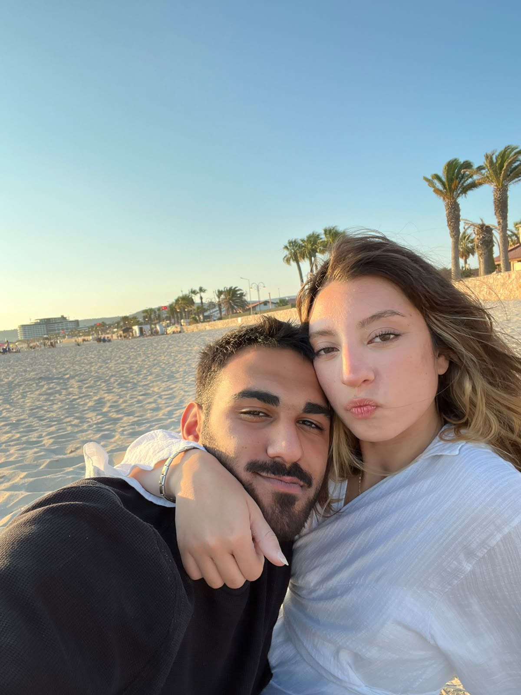

Bizim Anılarımız ❤️
Bazı anlar vardır, insanın kalbinde hep aynı yerde kalır.
“Bazı anlar hiç bitmesin...”

“Ne güzel denk geldik hayata.”

“Bir gülüşün bütün günü güzelleştirir.”

“Yan yana olmak, en güzel tesadüf.”

“Bazı insanlar iyi ki vardır.”

“Kalbin güzel olduğu yerde zaman durur.”

“Seninle geçen her an ayrı bir hikâye.”

“Güzel olan her şey biraz da sen.”
“Bazı mutlulukların fotoğrafı olur.”
“Ve bazı anılar sonsuza kadar bizimdir.”
Bu sayfaya küçük bir şarkı da eşlik etsin... 🎵
Sana... ❤️
Gözlerindeki gizemli evrende kaybolurum,
Kalbimdeki bu sevgi ve aşk tükenmez,
Zamanın ötesine geçip hayat gibi akarken,
Ne kelimelerim yeter hislerimi anlatmaya,
Ne de bu tutkulu hislerin bitmek nedir bilememek halleri...